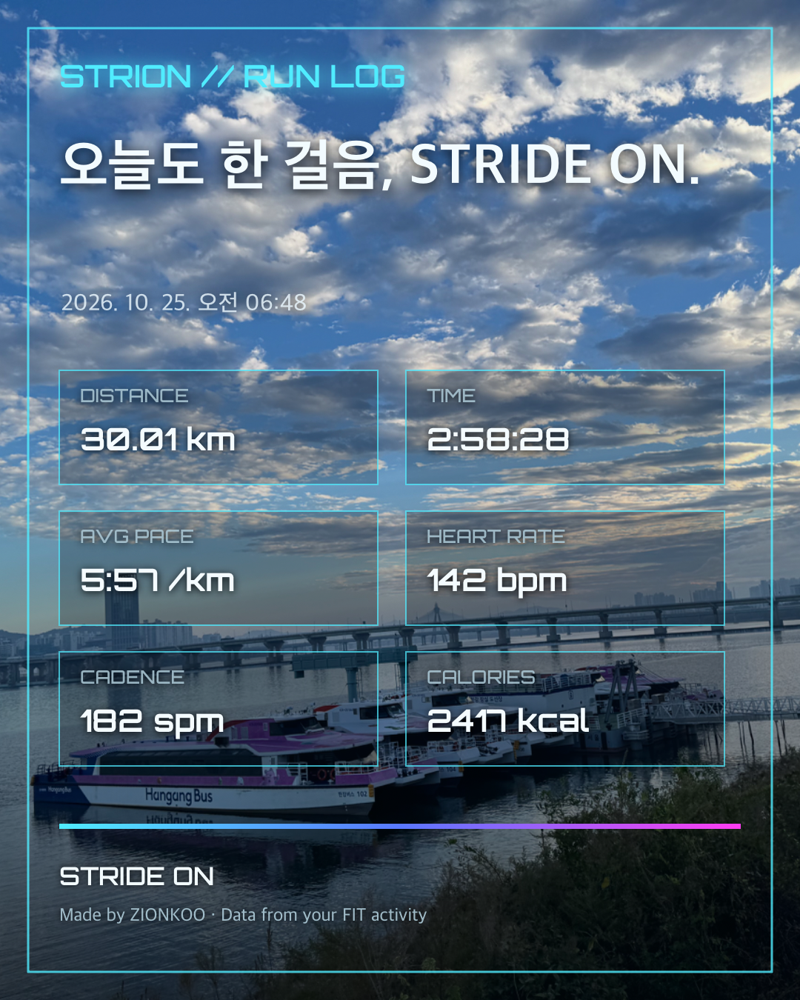

01 · Overview
한 걸음의 데이터를 이해하고, 다음 걸음을 이어가다
STRION은 STRIDE + ON의 합성어입니다. 러너가 운동 직후 핵심 기록을 이해하고, 지난 기록과 비교하며 다음 훈련과 레이스를 계획하는 흐름을 목표로 했습니다.
INPUTFIT와 Garmin
수동 FIT 업로드와 Garmin Connect 자동 동기화를 모두 지원합니다.
ANALYSIS러너 중심 해석
페이스·심박·러닝 다이나믹스·심박 존·구간 변화를 한 흐름으로 정리합니다.
ACTION다음 계획
PB·대회 일정·목표 페이스·레이스 운영 전략까지 연결합니다.
 LIVE EVIDENCE날씨, 다음 대회, 개인 PB와 기록 분석을 PC·모바일에서 같은 흐름으로 이용할 수 있도록 구성했습니다.
LIVE EVIDENCE날씨, 다음 대회, 개인 PB와 기록 분석을 PC·모바일에서 같은 흐름으로 이용할 수 있도록 구성했습니다.
02 · Problem & User
데이터는 많지만, 러너의 질문에는 바로 답하지 못했습니다
TARGET USER자기 기록을 이해하려는 러너
Garmin을 사용하고 대회와 훈련 목표가 있지만, 원본 데이터를 직접 해석하거나 기록을 매번 다시 찾는 데 불편을 느끼는 사용자입니다.
CORE PROBLEM분산된 정보와 반복 작업
페이스·심박·케이던스가 여러 화면에 흩어져 있고, FIT 분석을 위해 매번 파일을 다운로드하고 다시 업로드해야 했습니다.
핵심 질문“오늘 달리기에서 무엇이 유지되거나 무너졌고, 다음에는 어떻게 달려야 하는가?”
03 · Before / After
파일 이동 중심에서 기록 탐색 중심으로
BEFORE · MANUAL- Garmin Connect에서 활동 찾기
- FIT 파일 내려받기
- STRION에서 파일 다시 선택하기
- 지난 기록마다 같은 과정 반복하기
AFTER · CONNECTED- Garmin 연결 상태 확인하기
- 원하는 월의 활동 동기화하기
- 날짜별 기록 선택하기
- 재업로드 없이 분석 다시 열기
01 · IMPORT기록 가져오기
FIT 파일 또는 Garmin 동기화
02 · UNDERSTAND한 화면 요약
핵심 수치와 구간 변화 확인
03 · REVIEW훈련 해석
심박 존과 러닝 다이나믹스 검토
04 · PLAN다음 행동
훈련·목표 페이스·대회 계획
04 · Functional Requirements
핵심 요구사항과 동작 기준
FR-01FIT 분석거리·시간·페이스·심박·고도·케이던스·보폭·수직 진폭·수직 비율을 일관된 단위로 표시
FR-02Garmin 동기화연결 상태와 오류를 구분하고, 선택한 월의 러닝 목록과 FIT 원본을 가져오기
FR-03기록 재열람동일 활동 중복을 방지하고 브라우저 저장 기록을 날짜로 다시 열기
FR-04훈련 해석Garmin 개인 심박 존을 우선 적용하고 VDOT·훈련 페이스는 참고 정보로 구분
FR-05레이스 계획목표 기록에서 평균 페이스와 이븐·포지티브·네거티브 km별 전략을 계산하고 CSV 제공
FR-06기록 공유사진·영상 위에 활동 요약을 합성해 저장하거나 모바일 공유 메뉴로 전달
05 · Key Decisions
기능보다 신뢰와 반복 사용을 우선했습니다
Garmin 개인 심박 존 우선일률적인 최대 심박 비율보다 사용자의 Garmin 설정을 우선 적용하고, FIT에 존 정보가 없을 때만 입력값을 대체 기준으로 사용했습니다.
API 키와 공개 화면 분리개인 API 키를 HTML·GitHub·브라우저 저장소에 두지 않고 Cloudflare Worker의 비밀 환경 변수에 보관했습니다.
서버보다 로컬 저장 우선현재 개인용 단계에서는 FIT 원본과 분석 결과를 사용자 브라우저에 저장해 개인정보 전송을 줄이고 무료 운영을 유지했습니다.
결론보다 근거를 함께 표시코치 관점의 요약만 제시하지 않고 구간 페이스·심박·러닝 다이나믹스를 함께 보여 사용자가 직접 판단할 수 있게 했습니다.
06 · Implementation
서비스 흐름을 실제 기능으로 연결했습니다
01 · SOURCEGarmin Connect
개인 연결 API로 활동 목록과 FIT 원본 요청
02 · SECURE LAYERCloudflare Worker
API 키와 접근 코드를 보호하고 요청 중계
03 · WEB SERVICESTRION
FIT 파싱·분석·차트·계획 생성
04 · LOCAL DATABrowser Storage
기록 저장과 날짜별 재열람
AI 활용 범위사용 흐름과 검증 기준은 직접 정하고, AI 도구로 구현 초안과 오류 원인 탐색을 가속했습니다. 결과는 실제 FIT 기록과 Garmin 화면을 기준으로 다시 대조했습니다.
기술 세부와 장애 해결 기록 보기
- FIT SDK 파싱 결과를 Garmin 원본 화면과 항목별로 대조했습니다.
- Garmin 심박 존 경계가 1bpm씩 어긋나는 문제를 다음 존 시작값 기준으로 보정했습니다.
- Cloudflare Worker CORS와 전용 접근 코드를 적용해 공개 페이지의 호출 범위를 제한했습니다.
- iPhone 홈 화면 모드, 영상 미리보기와 브라우저별 미디어 재생 차이를 반복 확인했습니다.
07 · Validation
측정하지 않은 성과 대신, 확인한 결과를 기록했습니다
- 수동 FIT 업로드와 Garmin 자동 동기화
두 입력 경로에서 동일한 분석 화면 생성VERIFIED - Garmin 개인 심박 Zone 1–5
Garmin 원본 화면의 범위·시간 분포와 대조VERIFIED - 거리·페이스·심박·러닝 다이나믹스 단위
실사용 FIT 기록과 항목별 비교VERIFIED - 날짜별 저장 기록 재열람
파일 재업로드 없이 브라우저에서 복원VERIFIED - 다중 사용자 공식 Garmin 연동
현재 Personal API 기반 개인용 범위이며 공식 인증은 향후 조건NOT IN SCOPE

OUTPUTFIT 활동 데이터를 사진 또는 영상 위에 배치해 SNS용 기록 카드로 저장·공유할 수 있도록 확장했습니다.
08 · Reflection
기획은 기능의 수보다 문제를 줄이는 순서였습니다
LEARNED실제 사용이 다음 요구사항을 만들었습니다
직접 달리고 기록을 확인하면서 재업로드, 과도한 스크롤, 기록 비교와 공유의 불편을 발견했고 이를 기능 우선순위로 전환했습니다.
NEXT개인 도구에서 사용자 서비스로
공식 사용자 인증, 암호화 저장, 기기 간 동기화, 동의·보관·삭제 정책과 장기 훈련 추세가 다음 확장 조건입니다.